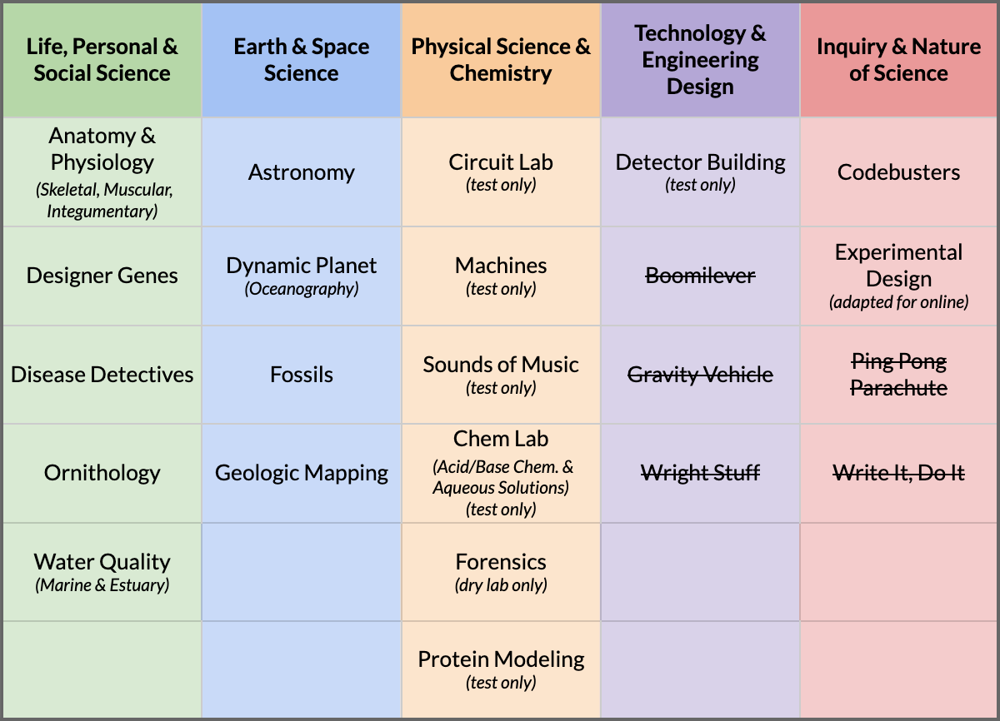

This page will continue to be updated as we finalize more details. Be sure to check back later for more information regarding our 2021 events.
Modified mini SO Model
Following the mini SO model, we will be running 18 of the regular 23 Division C national events on Scilympiad. We are also including the test components of some additional events. See the chart below for more details. Competitors will have the flexibility to take tests at any time within a 48-hour testing window.

Testing Details
Some preliminary information on what testing will look like:
Tests will be administered online through Scilympiad
All tests are open-internet
Tests may be taken during any 50 minute period within a testing window of two days
12:00 AM ET Friday (1/22) to 11:59 PM ET Saturday (1/23)
The timer for each test begins when one partner opens the test, so be sure to coordinate with your partners in advance
Tests will automatically sync between partners real-time
There is a built-in chat function, but competitors may use the built-in chat or their preferred mode of communication
To maintain social distancing, teams and partners are encouraged not to meet up in person